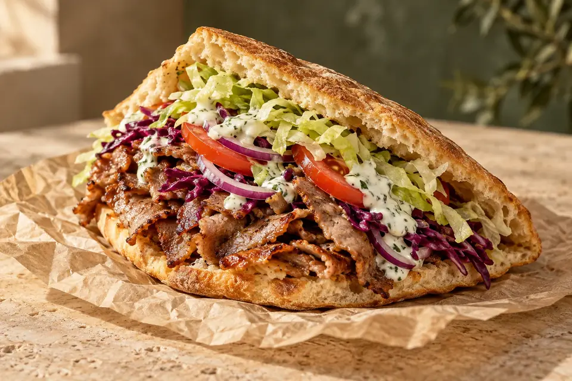
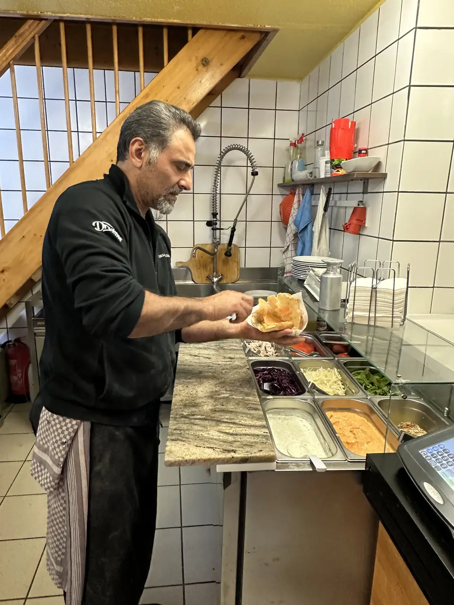
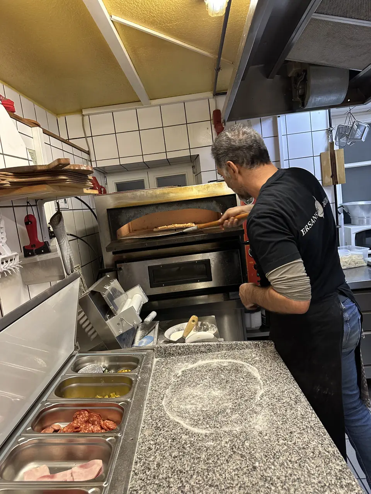
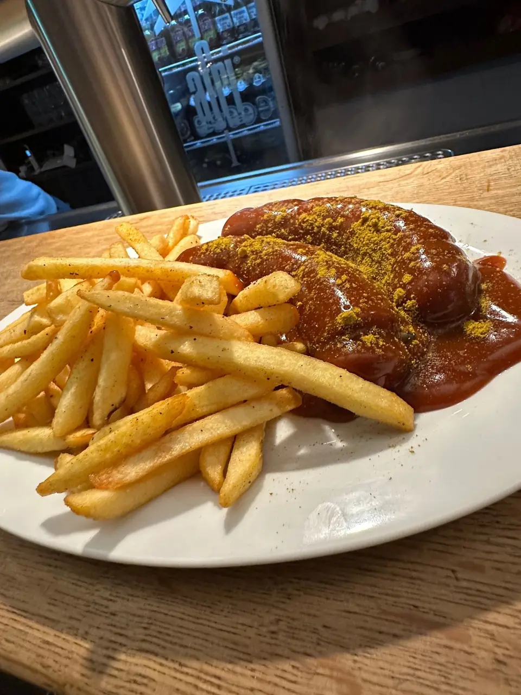
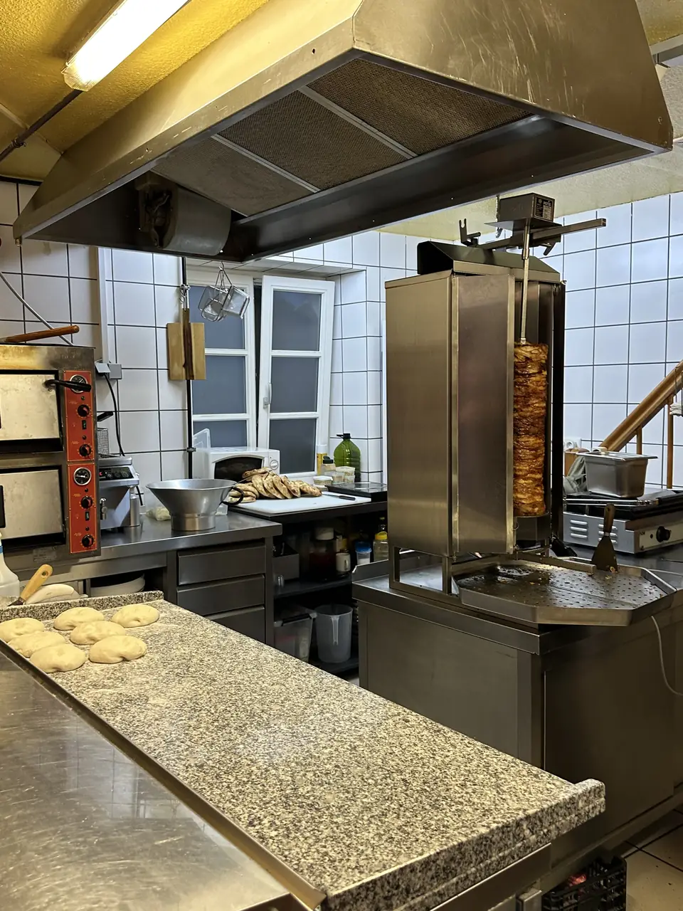

DEIN KEBAP. DEIN VIERTEL. DEIN ERSAN’S.
Ehrlich gut.
Richtig Ersan’s.
Knuspriges Brot. Saftiges Fleisch. Frisch für dich gemacht. Dein Lieblingsstopp für Döner, Pizza und mehr – mitten in Dinkelsbühl.
Für die Mittagspause.
Für den Feierabend. Für dich.

DAS ORIGINAL IM BROTDein guter Geschmack.DREI KLASSIKER. EINE GUTE ENTSCHEIDUNG.
Worauf hast
du heute Hunger?
Ein schneller Happen oder eine längere Pause.
Bei uns beginnt beides mit gutem Essen.


PERSÖNLICH. VOR ORT. FÜR DICH.KEINE GROSSE KETTE. UNSER KLEINER LADEN.
Gutes Essen
braucht Herz.
Bei Ersan’s bekommst du mehr als etwas auf die Hand: einen familiären Laden, eine offene Zubereitung und Menschen, die gern für dich da sind.
Wir haben renoviert, einen Rückschlag erlebt und weitergemacht. Heute freuen wir uns über jeden, der bei uns vorbeischaut.
Unsere GeschichteBis gleich, bei Ersan’s.
DIENSTAG KANN SO GUT SEIN.
Ein Klassiker.
Ein kleines Extra.
Currywurst mit Pommes bestellen und ein Bier oder einen Softdrink gratis dazu genießen.
inkl. Getränk am Dienstag
MITTEN IN DINKELSBÜHL.
Komm hungrig.
Geh glücklich.
91550 Dinkelsbühl

EIN ECHTER EINBLICK. UNSER LADEN.DER ABEND MUSS NOCH NICHT ENDEN.
Erst was Gutes essen.
Dann noch in den Stern.
Unser Partner für Drinks und einen
entspannten Abend in Dinkelsbühl.